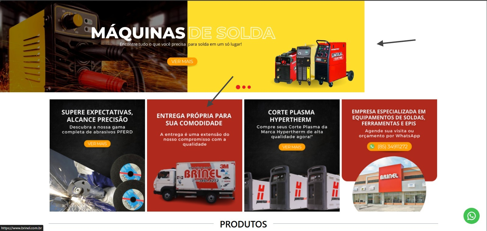
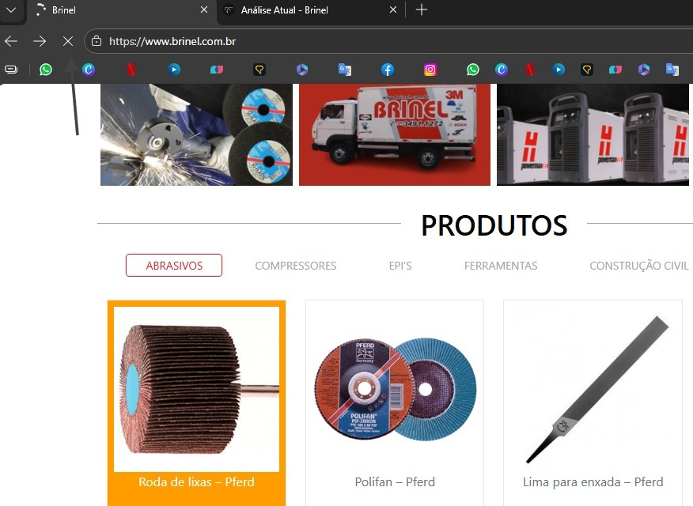
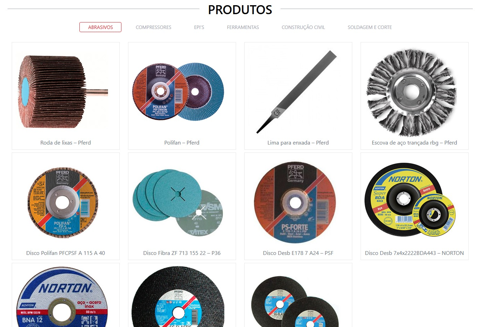
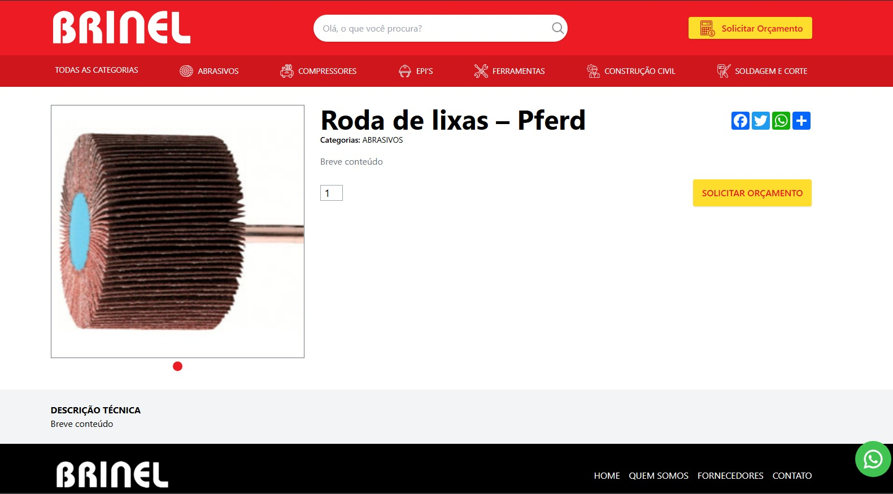

01. Interface Desatualizada
O design atual não transmite a credibilidade e o peso da marca Brinel. A tipografia e as cores não guiam o olhar do usuário para o que importa.
- ❌ Excesso de informações visuais
- ❌ Falta de chamadas para ação (CTAs) claras
- ❌ Ítens desalinhados e botões sem cofiguração

02. Lentidão Extrema
O tempo de carregamento está muito acima do recomendado. Clientes desistem de acessar o site antes mesmo dele abrir completamente.
- ❌ Imagens não otimizadas
- ❌ Código legado pesando o carregamento

03. Vitrine Pouco Atrativa
A apresentação dos produtos é fundamental para a conversão. O layout atual falha em destacar os itens e não cria desejo de compra no usuário.
- ❌ Efeito (passar o mouse) antiquado
- ❌ Imagens dos produtos com baixa qualidade e sem padronização
- ❌ Fundo branco chapado que não destaca os produtos

04. Página de Produto Incompleta
A página de detalhes do produto é o momento de decisão do cliente. O layout atual não informa, não tira dúvidas e parece estar inacabado.
- ❌ Faltam descrições atrativas e dados técnicos (apresenta texto genérico "Breve conteúdo")
- ❌ Layout vazio que passa falta de credibilidade
- ❌ Elementos interativos (campo de quantidade e redes sociais) sem padronização visual
Já entendemos os problemas. E agora?
Veja as Soluções